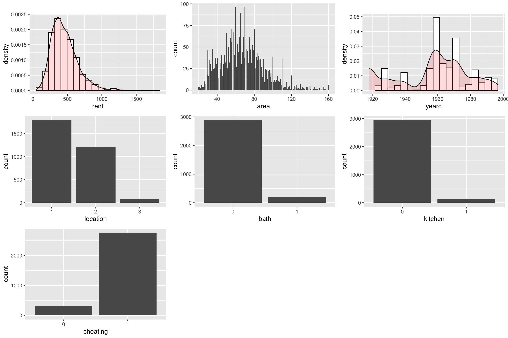
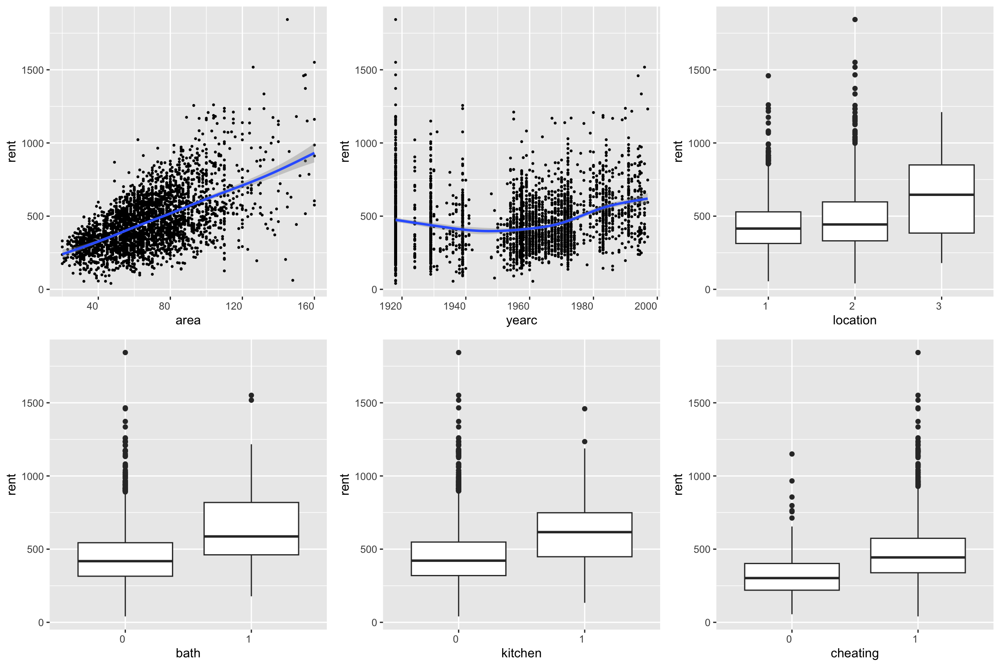
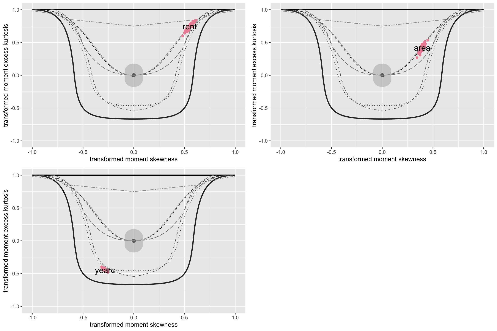

install.packages("gamlss.prepdata", repos = "https://gamlss-dev.R-universe.dev")gamlss.prepdata: Preparing Data for Distributional Regression
Overview
The purpose of this package is to streamline the data preparation process for distributional regression models, particularly for use with gamlss and gamlss2 packages.
Here’s a summary of what can be gained during this early analysis and how it contributes to effective modelling:
Understanding the Variables in the Dataset: One of the first steps is to understand the variables in your data. This includes summarizing the data, checking distributions, and identifying the type of each variable (e.g., categorical, continuous).
Missing Values; Knowing which variables have missing observations and how many observations are missing is important at this stage for decisions have to made on how to deal with the problem and whether we require data multiple imputations.
Outlier Detection: Outliers can distort the results of a model, so it’s important to detect them early. Outliers might require special attention, either by excluding them or by applying robust methods that minimize their impact.
Examining Associations between the x’s: Associations between variables can be explored using correlation (association) analysis and it important to ease model fitting and also for interpretation of the results.
Exploring Relationships; How the explanatory variables affect the response i.e. linearly or not is one aspect of this part of the analysis. The other is the present of interaction. Pairwise interactions can be easilly checked at this stage.
Variable Transformations; Variable transformations often has to do with how even the sample points on the variable are distributed over the range. Transformation could improve modelling.
Partitioning the Data for Statistical Inference: The dataset can be split into different sets (e.g., training, validation, test) to assess how well a model generalizes and to prevent overfitting.
Preliminary Decisions to Modelling Process: The insights gained from a preliminary analysis could be importany in the selection of an appropriate statistical or machine learning model.
Conclusion:
The key goal of this pre-modelling analysis of a distributional regression model is to prepare the data in the best possible way so that when you apply modelling techniques like gamlss or other regression methods, the process is smooth and the results are reliable. The insights gained in this stage will ensure that the models you fit will be both interpretable and generalizable, giving you the best chance for valid conclusions.
Installation
The package is not yet on CRAN but can be installed from R-universe.
For examples using the functions of the package see information
Functions
The functions for manipulation of variables are shown below
| Functions | Usage |
|---|---|
data_dim() |
Dimensions & % of omitted observations |
data_names() |
Names of the data |
data_distinct() |
Distinct values in variables |
data_which(() |
NA’s in variables |
data_str(). |
The class of variables etc. |
data_omit() |
Omit all the NAs |
data_char2fac() |
From characters to factors |
data_few2fac() |
From few distinct obs. to factors |
data_int2num() |
From integers to numeric |
data _rm() |
Remove variables |
data _rm1val() |
Remove factors with one level |
data _rename() |
Rename variables |
data _remove() |
Remove variables |
data _select() |
Select variables |
data _exclude_class() |
Exclude a specified class |
data _only_continous() |
Includes only continuous |
data_rmNAvars() |
Remove variables with NA values |
data_fac2num() |
Make factors to numerics |
The function for graphics are show below
| Functions | Usage |
|---|---|
data_plot() |
Univariate plots of all variables |
data_xyplot() |
Pairwise plots of the response against all others |
data_bucket() |
Bucket plots of all variables |
data_cor(() |
Pairwise correlations |
data_pcor(() |
Pairwise partial correlations |
data_void() |
Pairwise % of empty spaces |
data_inter() |
Pairwise interactions |
data_response() |
Response variable plots |
data_zscores() |
Univariate plots using z-scores |
data_outliers() |
Univariate detection of outliers |
data_leverage() |
Detection of outliers in the x’s space |
data_scale() |
Univariate scaling the x’s |
data_Ptrans_plot() |
Checking for univivariate transformations in the x’s |
Graphics
Here some of the graphical functions examples
library("gamlss")
library("gamlss2")
library("ggplot2")
library("gamlss.ggplots")
library("gamlss.prepdata")
library("dplyr")
packageVersion("gamlss.prepdata")
## [1] '0.1.9'
da <- data_rm(rent99, c(2, 9))
dim(rent99)
## [1] 3082 9
dim(da)
## [1] 3082 7data_plot()
The function data_plot plots all the variable of the data individually. It plots;
the continuous variable as histograms with a density plots superimposed, (see the plots for
rentandyearcbelow). Alternatively a dot plots can be requested, (see the example in Section 1.6).the integers as needle plots, (see the plot for
areabelow).the categorical variables, as bar plots, (see the plots for
location,bathkitchenandcheatingbelow).
The message 100 % of data are saved below is the result of the function data_cut() which is use before any ggplot2 plot.
da |> data_plot()
## 100 % of data are saved,
## that is, 3082 observations.
The function could saves the ggplot2 figures.
data_xyplot()
The functions data_xyplot() plots the response variable against each of the independent explanatory variables. It plots the continuous against continuous as scatter plots and continuous variables against categorical as box plot.
Warning
At the moment there is no provision for categorical response variables.
da |> data_xyplot(response=rent )
## 100 % of data are saved,
## that is, 3082 observations.
The output of the function saves the ggplot2 figures.
data_bucket()
The function data_bucket can be used to identifies hight skewness and kurtosis on continuous variables in the data. Note that if the continuous variable is normaly distribueterd looking should be in the center of the figure.
data_bucket(da, response=rent )
## 100 % of data are saved,
## that is, 3082 observations.
## rent area yearc location bath kitchen cheating
## 2723 132 68 3 2 2 2